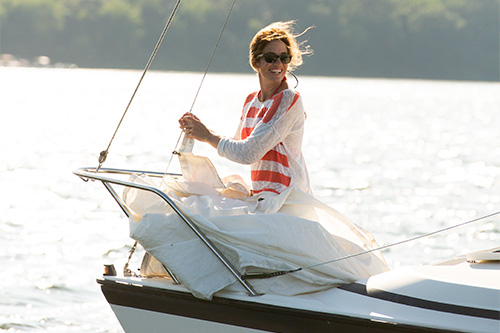

Beginner Sailing Tips
Before buying a brand new boat it is important to consider to make a sailing curse and maybe having a second hand small boat for training. Since is most likely that you will hit a dock in the beginning our even other boats. So have the chance to train with something less expensive.
- Choose calm, uncrowded waters If you’re just starting to master sailing basics and learn how to sail, then one of the most important beginner sailing tips to remember is to practice in ideal conditions of light winds and low traffic.
- Choose a small boat to learn how to sail It’s easier to learn how to sail with fewer lines and sails. A small dinghy will be more responsive and easier to maneuver, and is also perfect for practicing test capsizes in (see tip #7 below).
- Begin on a boat rigged with one sail Similar to the above, beginning on a boat that’s rigged with just one sail will make learning sailing basics easier and less complicated.
- Follow sailing basics for safety There are certain sailing basics for safe boating that should go without saying, no matter what your level of expertise. These include always telling someone before you go out on the water, always bringing a floatation device and knowing in advance how to swim.
- Research tide, wind and weather conditions. Check the weather forecast so you can be prepared for whatever the weather might bring. Be sure to bring along adequate provisions, clothing and basic weather gear as needed. Boating and sailing basics means always being prepared.
- Become familiar with sail control The best sailors are the ones who are able to adjust sail settings to take the best advantage of different wind and water conditions. In general, sails should be relatively flat when the wind is either very light or very strong, and full when there is a moderate wind.
- Capsize on purpose. This may seem like one of the oddest beginner sailing tips we could suggest, but it’s better to practice how to handle a capsized sailboat within a controlled environment, as opposed to an uncontrolled one. We learn best from experience, and the valuable sailing basics you’ll pick up from going through a test-capsize in a small dinghy will serve you well in the event of a real-life one.
- Respect the boom Some of the most common sailing injuries are a result of not being aware when the boom is about to swing. To avoid a bump to the head, or even worse, being knocked overboard, one of the most important beginner sailing tips to always remember for both passengers and crew is to be conscious and respectful of the boom at all times.
- Learn basic sailing terms. Before you venture out on your first trip, be sure to acquaint yourself with basic sailing terms. Make sure you know the difference between port, starboard, and other important concepts.
- Practice makes perfect. Don’t try to teach yourself all the sailing basics. Invest in a good sailing course, research guides and books, and learn from friends with experience.